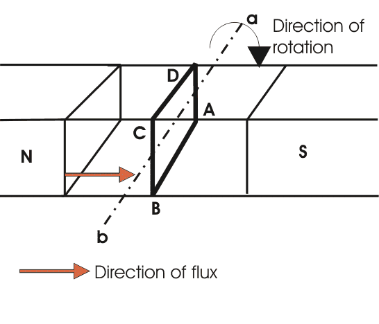
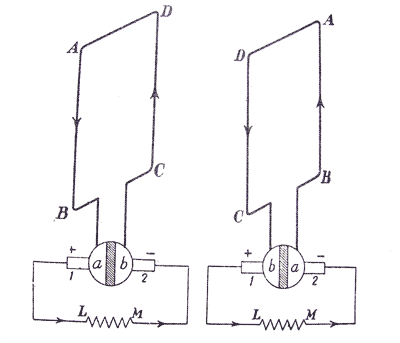
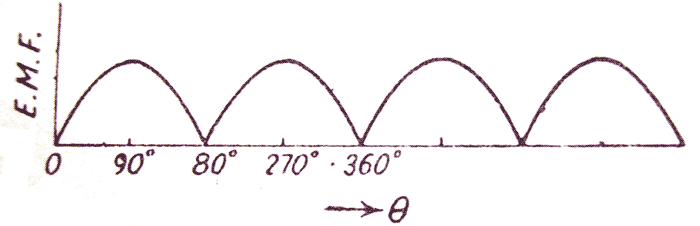

There are two types of generators, one is ac generator and other is dc generator. Whatever may be the types of generators, it always converts mechanical power to electrical power. An ac generator produces alternating power. A DC generator produces direct power. Both of these generators produce electrical power, based on same fundamental principle of Faraday's law of electromagnetic induction. According to these law, when an conductor moves in a magnetic field it cuts magnetic lines force, due to which an emf is induced in the conductor. The magnitude of this induced emf depends upon the rate of change of flux (magnetic line force) linkage with the conductor. This emf will cause an electric current to flow if the conductor circuit is closed.
Hence the most basic tow essential parts of a generator are
a) a magnetic field and
b) conductors which move inside that magnetic field.
Now we will go through working principle of dc generator. As, the working principle of ac generator is not in scope of our discussion in this section.
Single Loop DC Generator
Single Loop DC Generator
In the figure above, a single loop of conductor of rectangular shape is placed between two opposite poles of magnet.
Let's us consider, the rectangular loop of conductor is ABCD which rotates inside the magnetic field about its own axis ab. When the loop rotates from its vertical position to its horizontal position, it cuts the flux lines of the field. As during this movement two sides, i.e. AB and CD of the loop cut the flux lines there will be an emf induced in these both of the sides (AB & BC) of the loop.
Concept of Single Loop Generator
As the loop is closed there will be a electric current circulating through the loop. The direction of the electric current can be determined by Flemming's right hand Rule. This rule says that is you stretch thumb, index finger and middle finger of your right hand perpendicular to each other, then thumbs indicates the direction of motion of the conductor, index finger indicates the direction of magnetic field i.e. N - pole to S - pole, and middle finger indicates the direction of flow of electric current through the conductor.
Now if we apply this right hand rule, we will see at this horizontal position of the loop, electric current will flow from point A to B and on the other side of the loop electric current will flow from point C to D.

Now if we allow the loop to move further, it will come again to its vertical position, but now upper side of the loop will be CD and lower side will be AB (just opposite of the previous vertical position). At this position the tangential motion of the sides of the loop is parallel to the flux lines of the field. Hence there will be no question of flux cutting and consequently there will be no electric current in the loop.
If the loop rotates further, it comes to again in horizontal position. But now, said AB side of the loop comes in front of N pole and CD comes in front of S pole, i.e. just opposite to the previous horizontal position as shown in the figure beside.
Here the tangential motion of the side of the loop is perpendicular to the flux lines, hence rate of flux cutting is maximum here and according to Flemming's right hand rule, at this position electric current flows from B to A and on other side from D to C.
Now if the loop is continued to rotate about its axis, every time the side AB comes in front of S pole, the electric current flows from A to B and when it comes in front of N pole, the electric current flows from B to A. Similarly, every time the side CD comes in front of S pole the electric current flows from C to D and when it comes in front of N pole the electric current flows from D to C.
If we observe this phenomena in different way, it can be concluded, that each side of the loop comes in front of N pole, the electric current will flow through that side in same direction i.e. downward to the reference plane and similarly each side of the loop comes in front of S pole, electric current through it flows in same direction i.e. upwards from reference plane. From this, we will come to the topic of principle of dc generator.
Now the loop is opened and connect it with a split ring as shown in the figure below. Split ring are made out of a conducting cylinder which cuts into two halves or segments insulated from each other. The external load terminals are connected with two carbon brushes which are rest on these split slip ring segments.
Working Principle of DC Generator

It is seen that in the first half of the revolution electric current flows always along ABLMCD i.e. brush no 1 in contact with segment a. In the next half revolution, in the figure the direction of the induced electric current in the coil is reversed. But at the same time the position of the segments a and b are also reversed which results that brush no 1 comes in touch with that segment b. Hence, the electric current in the load resistance again flows from L to M. The wave from of the electric current through the load circuit is as shown in the figure. This electric current is unidirectional.

This is basic working principle of DC generator, explained by single loop generator model.
The position of the brushes of DC generator is so arranged that the change over of the segments a and b from one brush to other takes place when the plane of rotating coil is at right angle to the plane of the lines of force. It is so become in that position, the induced emf in the coil is zero.
 by
by {kind=link}
{kind=link}
{kind=link}
{kind=link}
{kind=link}
{kind=link}